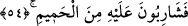

Bu doldurma işi, açlıklarının şiddetinden veya ona zorlanacaklarından dolayı olacaktır.
Bu ifâde de yine onların azablarının çokluğunu ve eksiksiz olacağını açıklamaktadır.
Yâni, bir kişinin herhangi bir şey yemekle yetindiği gibi olmayacak, aksine hiçbiriniz
yalnız zakkum ağacından yemekle yetinmeyecek, bunun ötesinde ondan karınlarınızı
iyice doldurmağa zorlanacaksınız. Hâsılı herbiriniz karnını o ağaçtan dolduracak veya
onunla bağırsaklarının içlerini dolduracaktır. Birinci görüş daha açık, ikinci görüş ise
azabın şiddetli olduğunu beyân açısından daha uygundur.
54. Üstüne de kaynar sudan içeceksiniz.
“Üstüne de” yâni zakkum ağacının üstüne, başka bir deyişle, zakkum ağacını yedikten
hemen sonra sizi bastıran susuzluk sebebiyle o son derece yakıcı “kaynar sudan
içeceksiniz.”
55. Susamış develerin suya saldırışı gibi içeceksiniz.
Bu âyet, önceki âyetin tefsiri gibidir. Yâni sizin bu içmeniz, âdet hâline gelen uslu bir
içiş olmayacak, tersine susamış develerin suya saldırışı gibi olacaktır.
Burada kullanılan (hîm) kelimesi, hiyâm hastalığına yakalanmış deve demektir. Bu
hastalık susuzluk hastalığıdır ki, buna yakalanan suya kanmaz, çatlayıncaya kadar veya
ağır bir şekilde hastalanıncaya kadar içmeye devam eder. Hîm, ehyem ve heymâ
kelimesinin çoğuludur. Böyle olunca aslı hüym’dür. Ehram ve humr gibi. Kelimede yâ
harfinin kalabilmesi için he’nin üzerindeki ötre esreye dönüştürülmüştür.
Bu açıklamalar ışığında âyetin mânâsı şöyle olur: Onlara öylesine korkunç bir açlık
ve içlerini saran bir alevlenme verilir ki, bu durum onları erimiş maden gibi olan
zakkum ağacını yemeğe mecbur eder. Son derece yakıcı ve acı olan bu ağaçtan
karınlarını doldurduklarında onlara öylesine bir susuzluk verilir ki, bu onları,
bağırsaklarını paramparça edecek son derece kaynar suyu içmeye zorlar. Bundan dolayı
o suyu susamış develer gibi içerler. Bu ifâde de, öncekinde olduğu gibi, onların
azablarının ne derece artacağını açıklayan bir üslup vardır. Yâni ey sapıklar! Sizin bu
suyu içmeniz: pis kokulu, kaynar suyu içenin içmesi gibi değildir. Çünkü böyle bir
kimse, o suyun acı ve azab verici olduğunu görür görmez onu içmekten uzak durur. Oysa
siz, içip içip bir türlü kanmayan susuzluk hastası develer gibi o kaynar suyu içmeğe
zorla itilecek, mecbur bırakılacaksınız.